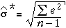

Fehler und Residuen
Zuvor wurde bereits beobachtet, dass der Fehler, ε, für jeden Datenpunkt sein vertikaler Abstand zur Regressionsgeraden ist.
In der Praxis sind Steigung und Achsenabschnitt der Regressionsgeraden unbekannt, so dass auch die Fehler nicht bekannte Werte sind. Jedoch, genau wie die Gerade der kleinsten Quadrate Abschätzungen für β0 und β1 gibt, erlauben auch die kleinsten Quadrate der Residuen eine Abschätzung des unbekannten Fehlers.
| Die Residuen sind daher Abschätzungen des unbekannten Fehlers. |
Berechnung der Standardabweichung von Fehlern
Der dritte unbekannte Parameter eines normalen linearen Modells σ ist die Standardabweichung der Fehler.
σ = st devn ( ε )
Eine vernünftige Schätzung von σ ist daher die Standardabweichung der Residuen der Proben,

Es kann mathematisch bewiesen werden, dass die Residuen der kleinsten Quadrate immer das arithmetische Mittel Null haben, sodass diese Formel gleichbedeutend ist mit

Unglücklicherweise tendiert diese Schätzung zu etwas zu niedrigen Werten. Eine bessere Schätzung ist

Krebstode und Bestrahlung
Die Hanford Atomic Energy Plant in Washington State, USA, ist seit dem Zweiten Weltkrieg eine Produktionsanlage für Plutonium. Der radioaktive Müll wird in nahegelegenen Gruben gelagert. Etwas von diesem radioaktiven Müll ist in den Colambia River gesickert, und acht Bezirke in Oregon und die Stadt Portland wurden radioaktiv kontaminiert. Die Tabelle unten zeigt den Index der Belastung durch die Strahlung durch den Fluss, der proportional zum Flussufer ist und umgekehrt proportional zu der Entfernung von Hanford und zum Quadrat der durchschnittlichen Tiefenlage des Bezirks (der Stadt) abseits des Flusses. Krebstode pro 100.000 Einwohner sind auch aufgeführt.
| Bezirk/Stadt | Belastungsindex | Tote pro 100.000 | |||
|---|---|---|---|---|---|
|
|
|
Das Diagramm unten zeigt die Daten.
Die Residuen von der grauen Linie auf dem Streudiagramm sind auf der rechten Seite in einem Punktdiagramm dargestellt. Ziehe die Linie (indem die roten Pfeile bewegt werden), um die Residuen kleiner zu machen.
Klicke kleinsten Quadrate, um die Gerade der kleinsten Quadrate (und somit auch die besten Schätzungen für β0 und β1) zu sehen. Die beste Schätzung für σ basiert auf den Residuen der kleinsten Quadrate und ist unten rechts angegeben.